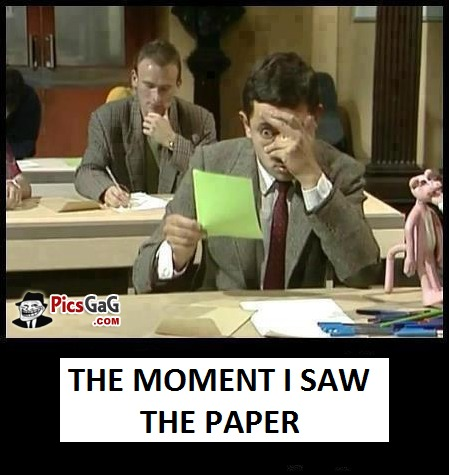

A growing compendium of real events that have happened to me at NTU when interacting with students. Lightly edited. -- Nachiket
22nd August 2013
Prof: "Imagine you are describing this problem to your mother..."
Student: "But my mom has a PhD in Electrical Engineering and understands this problem better than me..."
Prof: (explaining saliency computation) "...in a sea of students sitting in the lab, where are my eyes most likely to focus..."
Student: "...the female students..."
Student: (via email) "... P.S. Do you happen to know Dr. Sheldon Cooper from Caltech?"
Student: (via email) "... P.S. Bazinga"
Student: (walks into office) "Is this where the tea ceremony is going to be?"
18th March 2014
Student Email Subject "¯(°_o)/¯" Context: I'm throwing up my hands in despair. My experiment does not work!
31st July 2014
Convocation Day 2014 - student walks into my office looking for a tie to wear to the ceremony. I don't have one so cannot really help him. He seems desperate and lost. Upon prodding him, he reveals his concern that maybe he won't get his degree without a tie?! I now carry a tie in my drawer to spare prospective graduates any blushes :).
16th January 2015
After a particularaly grueling MSc final exam for ES6152, my students posted this image on the class wiki.
